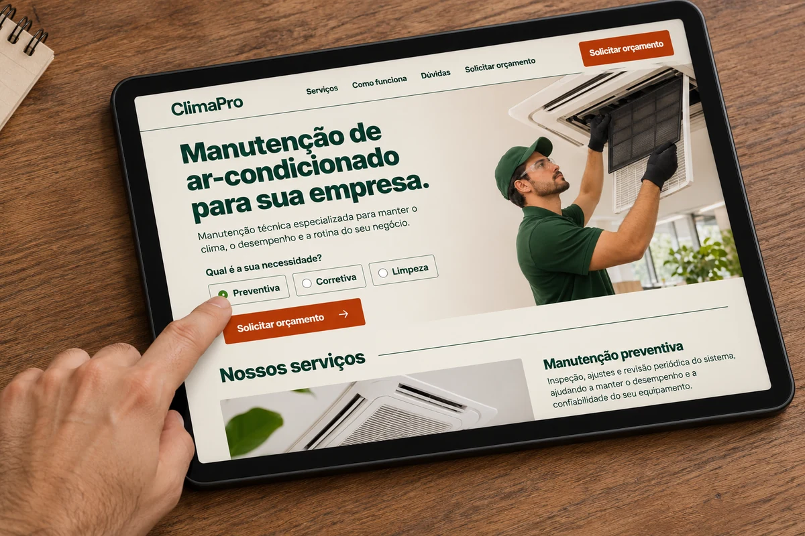
Site
Criamos sites, interfaces e integrações para agências e empresas, do seu layout ou briefing à entrega.
Abra um trabalho para ver como funciona na prática.

Site
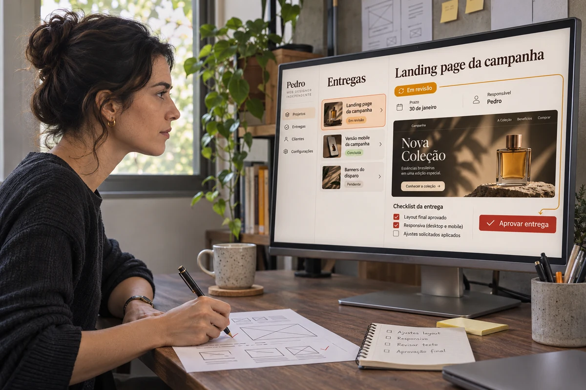
Ferramenta de trabalho

Automação
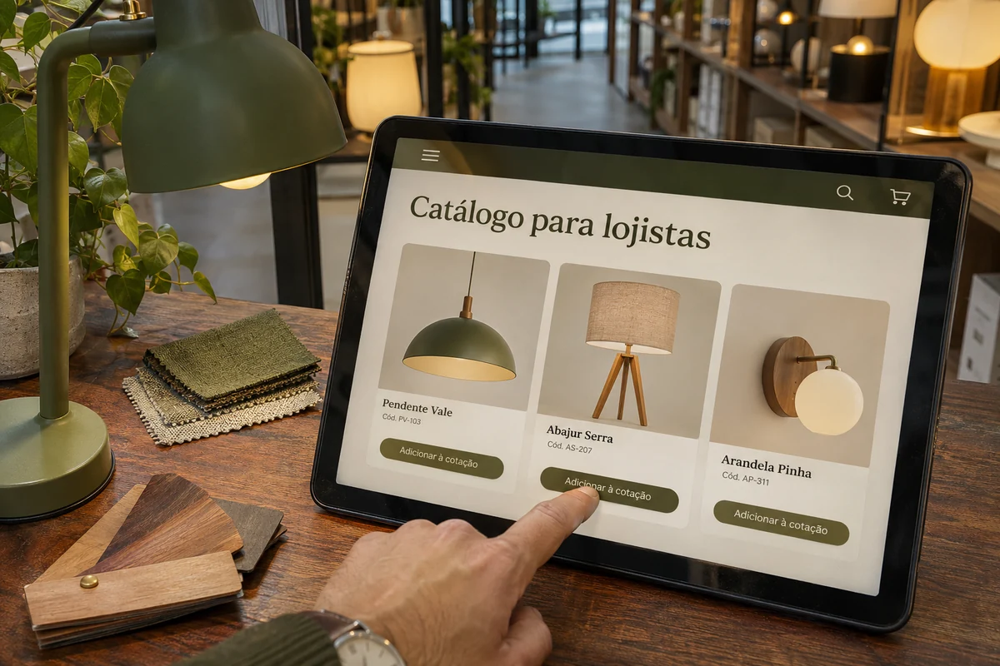
Site

Ferramenta de trabalho

Automação
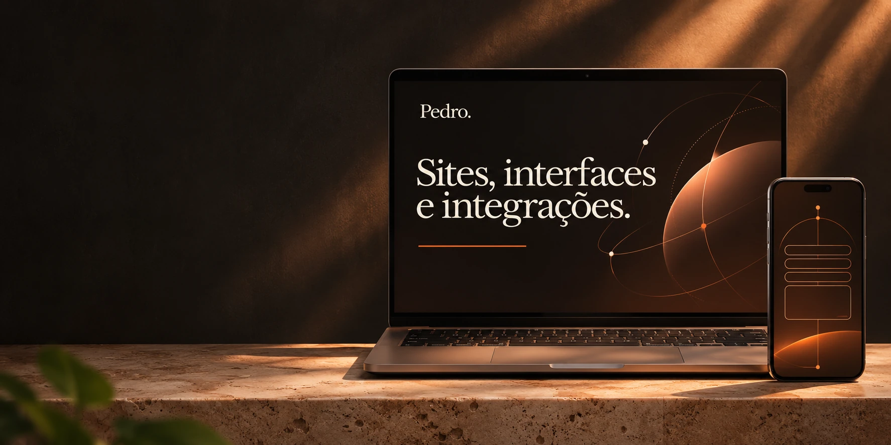
Projeto autoral
Desenhei a identidade e desenvolvi a navegação deste portfólio. A assinatura, a luz quente e o cobre conectam a capa aos projetos. Os filtros permitem percorrer a coleção pelo tipo de trabalho.
Voltar à galeriaEscolha o que você precisa resolver e veja um exemplo funcionando.
Explorar guias para pequenos negócios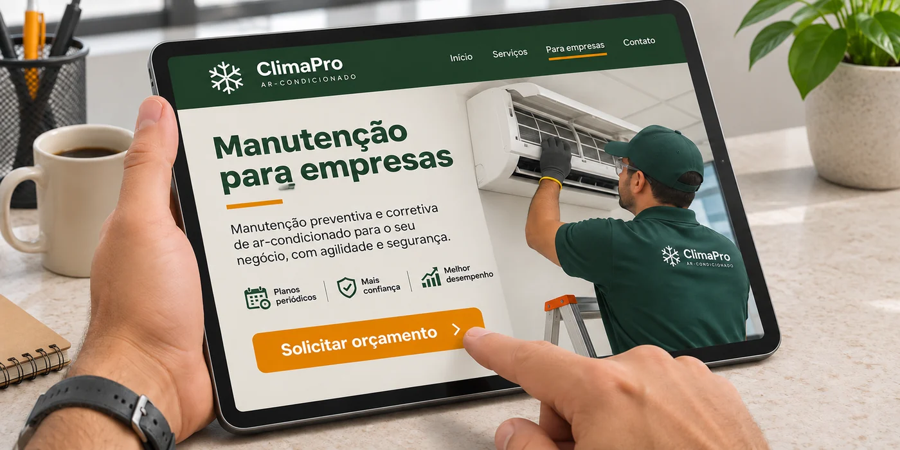
Seu cliente escolhe o serviço e envia o pedido de orçamento pelo celular.
Ver a página de orçamento Ver oferta da página de orçamentos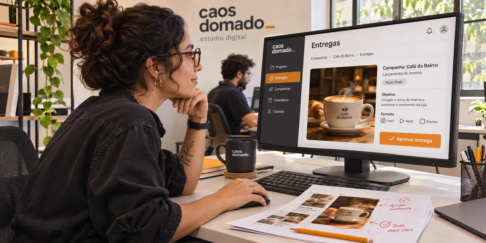
Seu cliente confere o site, envia os ajustes e deixa a aprovação registrada.
Experimentar a aprovação do site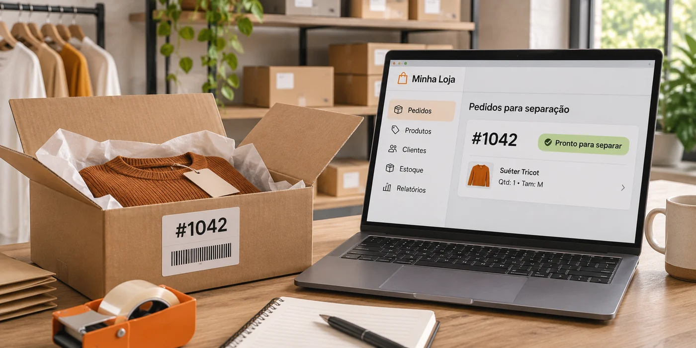
O pedido da loja aparece na fila de separação com os dados certos. Se a loja reenviar o pedido, a fila mantém um único registro.
Testar o envio de um pedido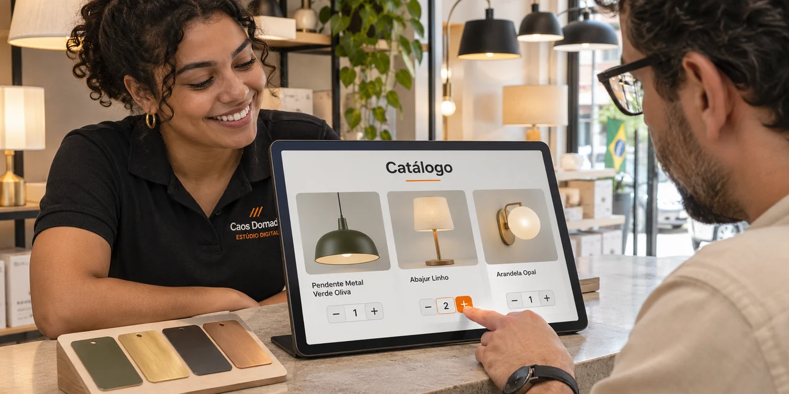
O comprador escolhe os produtos e as quantidades e baixa uma lista para pedir cotação.
Experimentar o catálogo Ver oferta do Catálogo Online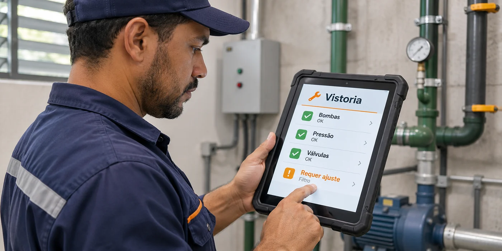
Quem faz a visita marca o que conferiu, anota pendências e leva o relatório pronto.
Testar uma vistoria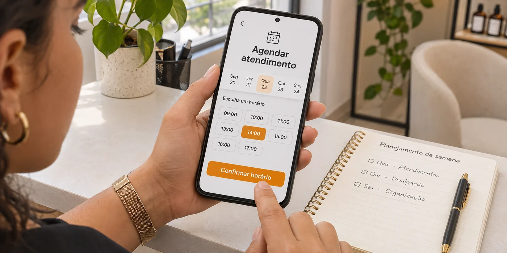
O cliente escolhe um horário disponível e pode salvar o compromisso no calendário.
Testar um agendamento Ver oferta de agendamento onlineJá tem o layout aprovado? A Caos Domado assume a implementação e trabalha com sua equipe até a entrega.
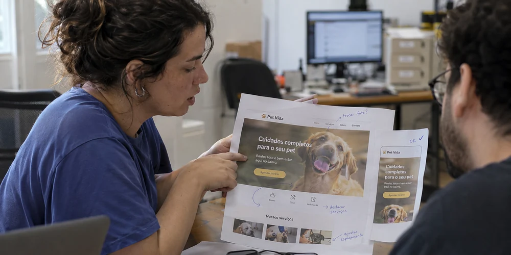
Seu time compartilha o briefing e os arquivos. Combinamos o escopo e o prazo.
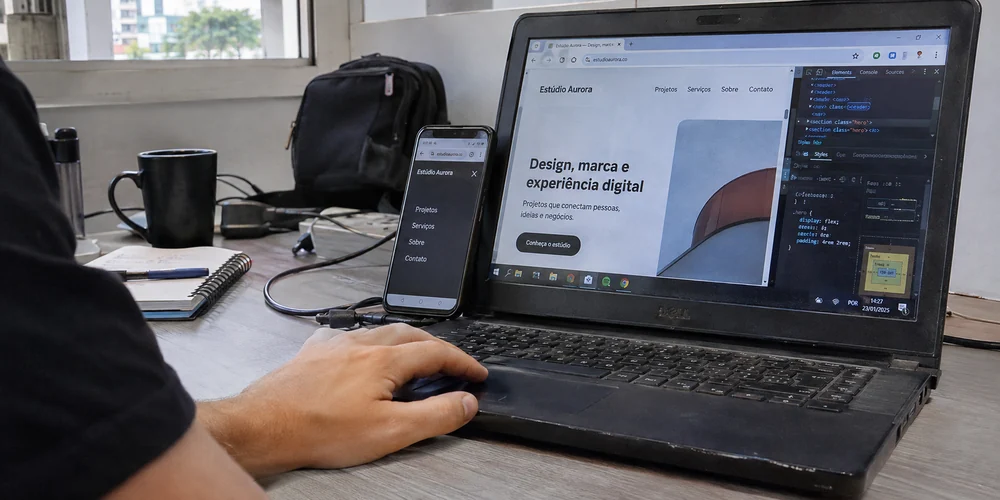
Implementamos o layout, testamos no computador e no celular e conectamos os formulários previstos.
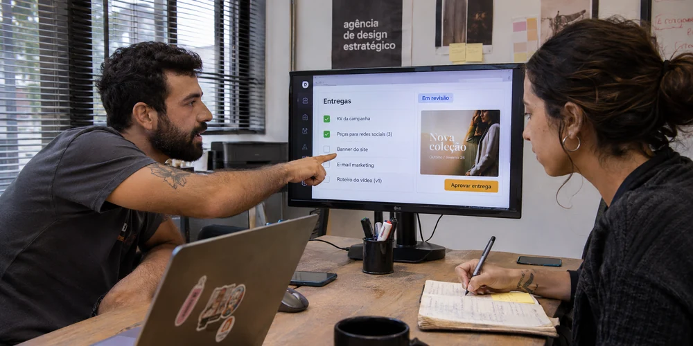
Sua equipe testa a versão navegável. Fazemos os ajustes combinados e preparamos a publicação ou o repasse.
Quer ver como funciona uma revisão?
Experimentar uma revisão com o clienteEscolha uma situação para ver como o fluxo funciona.
A equipe envia uma prévia. O cliente pede ajustes ou aprova por ali, e a versão liberada fica registrada para a publicação.
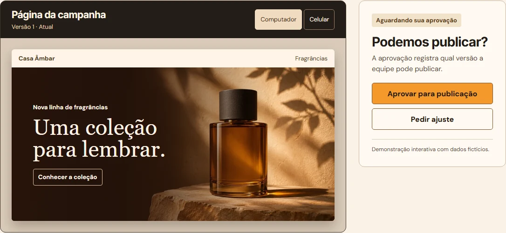
O cliente seleciona o serviço e descreve o que precisa. A equipe recebe esse contexto para dar sequência no atendimento.
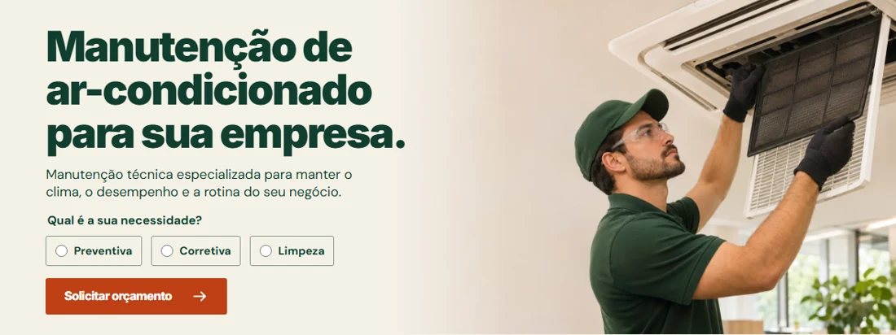
A equipe confere os itens e as quantidades que vieram da loja, gera a etiqueta e registra a coleta.
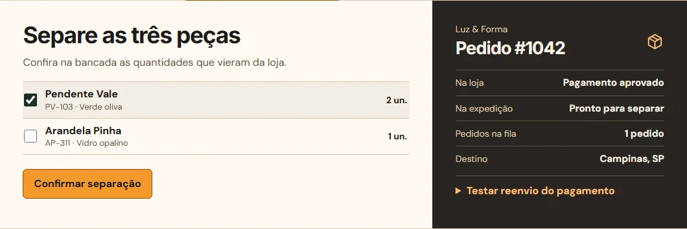
Como funcionam o escopo, a revisão e a publicação do seu projeto.
Sim. Pode me passar o layout, o briefing e os arquivos disponíveis. Antes de começar, alinhamos o que falta e como a página deve se comportar no celular.
Sim. Podemos combinar uma entrega pontual, como implementar uma landing page, ajustar um formulário ou integrar uma página a uma ferramenta que seu time já usa.
Depois de entender o escopo, o que já está pronto e quais integrações entram na entrega, eu proponho o valor e o cronograma para aprovação. Se você já tem uma data de campanha, inclua no briefing.
Você recebe uma versão navegável para revisar. Validamos o que foi combinado, incluindo os fluxos principais, antes de decidir se eu ajudo na publicação ou faço o repasse ao seu time.
Hospedagem, publicação e suporte após a entrega são definidos na proposta. Assim fica claro quem cuida do site depois e quais ajustes fazem parte da entrega.
Sim. Se você ainda não tem um layout, me conte o objetivo e o que precisa funcionar. A primeira conversa serve para definir por onde começar.
Me conte o que você quer lançar, o que já tem pronto e qual prazo tem em mente.
Conversar no WhatsApp